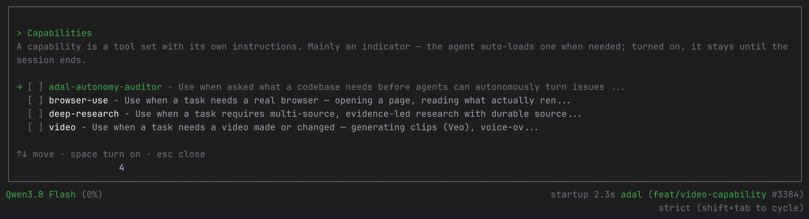
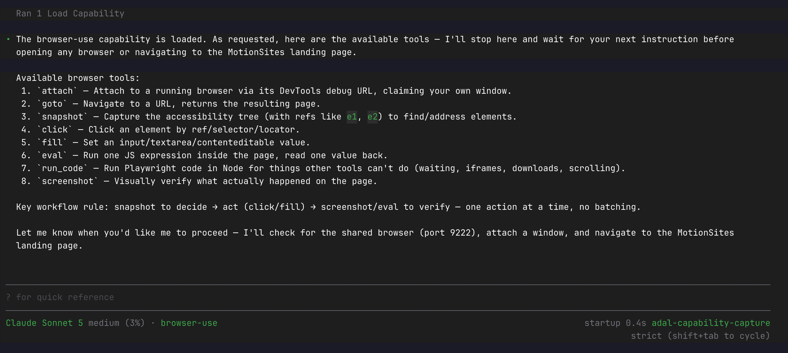
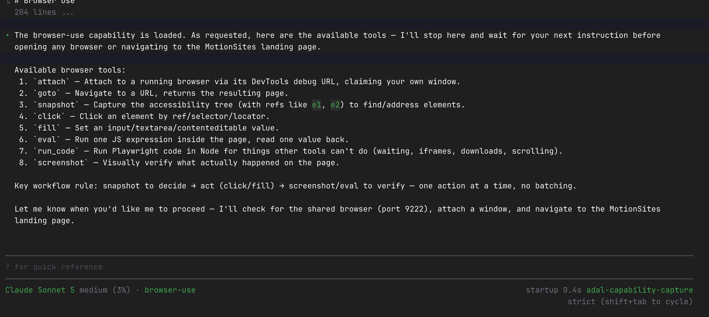

Capabilities
Give AdaL
eyes.
Browser use checks the page that rendered. Video checks the motion a screenshot cannot show.

Open /capabilities to see what AdaL can load when the task needs it.
Capabilities
Browser use checks the page that rendered. Video checks the motion a screenshot cannot show.

Open /capabilities to see what AdaL can load when the task needs it.
Capability load
AdaL loads browser use in the conversation, then shows what it can do.

Real AdaL CLI: browser use has been added to this session.
Tool detail

Real AdaL CLI: the expanded card lists the browser tools before the next action.
Browser use
Open a reference. Capture its desktop, tablet, and mobile layouts.
Read its colors, fonts, assets, structure, console errors, and network requests.
Open the build at the same widths. Compare the actual screen.
Close the loop
A useful agent can use visible evidence to make the next edit.
Create the page from a reference or prompt.
Compare layouts in the browser and inspect motion with video.
Use the differences as the next instruction. Repeat until it meets the brief.